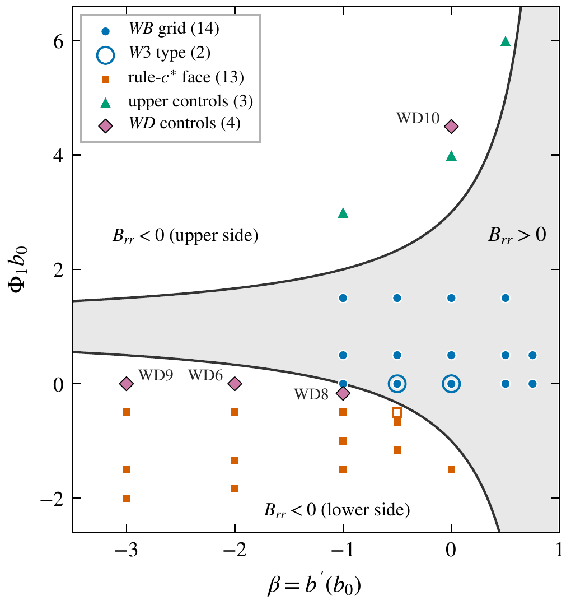
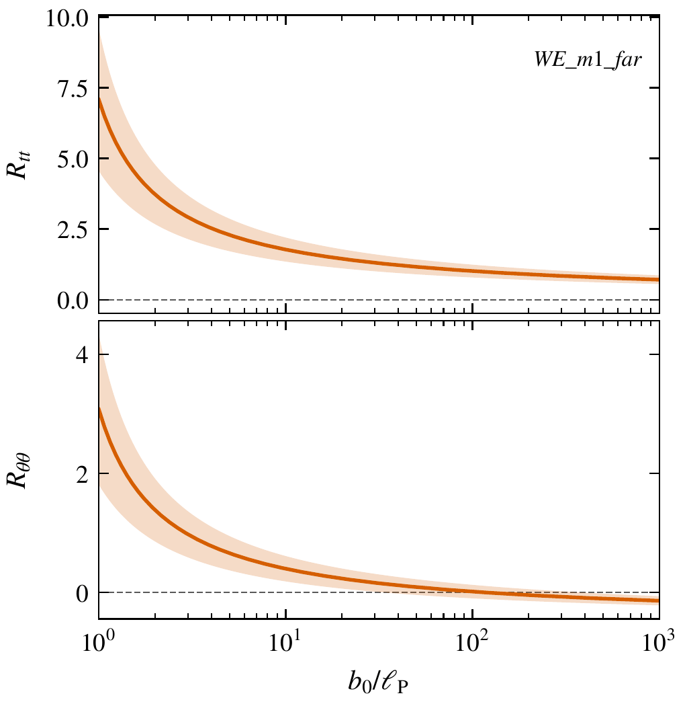

1A tunnel through space空間のトンネル
In science fiction, a wormhole is a tunnel through space. It joins two far places by a short path. Einstein's theory of gravity, general relativity, allows such shapes on paper. The narrowest part of the tunnel is called the throat.
SF では、ワームホールは空間を通るトンネルです。遠い二つの場所を、短い道でつなぎます。アインシュタインの重力の理論、一般相対論は、紙の上ではこうした形を許します。トンネルのいちばん細い所を、喉と呼びます。
But a throat does not stay open by itself. Something must hold it open. This paper asks what the quantum vacuum alone can do.
けれども、喉はひとりでには開いたままになりません。何かが、喉を開いておかなければなりません。この論文は、量子の真空だけで何ができるかを問います。
2What could hold a throat open何が喉を開いておけるか
In 1988, Michael Morris and Kip Thorne showed what a throat needs. At the throat, the source must violate the null energy condition. In simple words, the source must have a property that ordinary matter does not have. Physicists call such a source exotic.
1988 年、マイケル・モリスとキップ・ソーンは、喉に何が要るかを示しました。喉では、源がヌルエネルギー条件を破らなければなりません。やさしく言うと、源は、ふつうの物質には無い性質を持たなければなりません。物理学者は、そうした源をエキゾチックと呼びます。
Quantum physics gives a candidate. In quantum theory, empty space, the vacuum, is not completely empty. In curved spacetime, the vacuum carries a small energy and pressure. Physicists call these together the vacuum stress. In some places, the vacuum stress can have the unusual sign. So it is the standard candidate to hold a throat open.
量子物理は、候補を一つ与えます。量子論では、何も無い空間、つまり真空は、完全には空っぽではありません。曲がった時空では、真空は小さなエネルギーと圧力を持ちます。物理学者は、これらをまとめて真空の応力と呼びます。真空の応力は、ところによって、ふつうでない符号を持てます。そのため、喉を開いておく源の、標準の候補になっています。
The paper uses the semiclassical approach. The shape of spacetime stays classical, as in Einstein's theory. The vacuum stress, averaged, is its source in Einstein's equations.
論文は、半古典の取り扱いを使います。時空の形は、アインシュタインの理論のとおり古典のままです。平均した真空の応力が、アインシュタイン方程式の中で、その形の源になります。
The paper asks a narrower question than “can wormholes exist?”. It asks: on given throat shapes, can the vacuum of one quantum field, alone, satisfy Einstein's equations at the throat?
論文の問いは、「ワームホールはありうるか」よりも狭いものです。与えた喉の形で、一種類の量子の場の真空だけで、喉でのアインシュタイン方程式を満たせるか、を問います。
3The test試し方
The paper does not try to build a wormhole. It takes a throat shape, keeps it fixed, and tests it. All shapes are of the kind that Morris and Thorne described: static, round, with no horizon, and with two open regions far from the throat.
論文は、ワームホールを作ろうとはしません。喉の形を一つ決めて固定し、その形を試します。形は全て、モリスとソーンが述べた種類のものです。時間で変わらず、丸く、地平線が無く、喉から遠い所に開けた領域が二つあります。
The source is one kind of quantum field: a massless scalar field with conformal coupling (in the paper, ξ = 1/6). Its state is the static vacuum (Boulware-type). On each shape, the paper computes the full vacuum stress at the throat. This is a long numerical calculation.
源は、一種類の量子の場です。質量の無い、共形結合のスカラー場(論文では ξ = 1/6)で、状態は静的な真空(ブールウェア型)です。それぞれの形で、論文は喉での真空の応力を、省かずに全て計算します。長い数値計算です。
At the throat, Einstein's equations have three parts, one for each direction:
喉で、アインシュタイン方程式は、向きごとに一つずつ、三つの部分に分かれます。
- energy (in the paper: tt),
- pull along the tunnel, the radial part (rr),
- pressure around the tunnel (θθ).
- エネルギー(論文では tt)
- トンネルに沿った引っ張り、つまり動径の向きの部分(rr)
- トンネルを回る向きの圧力(θθ)
A real throat needs all three at the same time. In this guide, we call them the energy equation, the pull equation and the third equation.
本当の喉には、三つが同時に要ります。このページでは、これらをエネルギーの式、引っ張りの式、三つ目の式と呼びます。
The paper allows N identical copies of the field. More copies give more stress: N times as much.
論文は、同じ場が N 個あってよいとします。数が多いほど、応力は大きくなります。N 倍です。
The calculation has one free length, ℓ. Quantum theory does not fix its value. The paper fixes ℓ to an absolute length. The main value is the Planck length, about 1.6 × 10−35 metres. Then it looks for throats with a radius from 1 to 1,000 Planck lengths. In this guide, we call this range the window.
計算には、決まっていない長さ ℓ が一つあります。量子論は、その値を決めません。論文は、ℓ をある決まった長さに固定します。主な値はプランク長さ、約 1.6 × 10−35 メートルです。そのうえで、半径がプランク長さの 1 倍から 1000 倍の喉を探します。このページでは、この範囲を窓と呼びます。
In all, the paper examines 42 fixed shapes, in three layers of work. Each layer closed only after an independent review.
全部で、論文は 42 の固定した形を、三つの層に分けて調べます。どの層も、独立した審査を通ってから閉じました。
4An approximation and the full answer近似と、省かない答え
First, the paper looks at three smooth throats (W1 to W3 in the paper). Here, the free length is equal to the throat radius.
まず論文は、三つのなめらかな喉(論文では W1〜W3)を見ます。ここでは、決まっていない長さを、喉の半径と同じにします。
An older approximation (of the form of Anderson, Hiscock and Samuel, 1995) keeps only a local part of the vacuum stress. In 1997, Hochberg, Popov and Sushkov used this approximation to build self-consistent wormhole solutions.
以前からある近似(アンダーソン、ヒスコック、サミュエル、1995 年の形)は、真空の応力のうち、局所的な部分だけを残します。1997 年、ホッホバーグ、ポポフ、スシュコフは、この近似を使って、自己無撞着なワームホールの解を作りました。
On all three throats, the local part alone gives a tension along the tunnel. This is the sign that a throat needs. But the full calculation gives the opposite sign: a pressure. The part that the approximation leaves out carries at least 94% of the total.
三つの喉のどれでも、局所的な部分だけだと、トンネルに沿った張力になります。これは、喉に要る符号です。ところが、省かない計算は、逆の符号、つまり圧力を与えます。近似が省く部分が、全体の 94 % 以上を占めます。
So, on these throats, the sign of the approximation does not decide the sign of the total. The paper does not test the 1997 self-consistent solutions themselves.
そのため、これらの喉では、近似の符号は全体の符号を決めません。1997 年の自己無撞着な解そのものは、論文は試していません。
5One number decides the size limit大きさの限りを決める一つの数
Next, the size of the throat. When the throat radius changes, the vacuum stress at the throat changes through a logarithm. One number at the throat, B, sets how strongly. (In the paper, this number is the throat logarithmic coefficient Brr.)
次は、喉の大きさです。喉の半径が変わると、喉での真空の応力は、対数を通して変わります。その強さを決めるのは、喉での一つの数 B です(論文では、喉での対数の係数 Brr)。
The paper finds a short formula for B. It depends on only two properties of the shape at the throat:
論文は、B の短い式を見つけます。B は、喉での形の二つの性質だけで決まります。
- β: how fast the tunnel opens out at the throat,
- Φ1b0: how fast the rate of clocks changes there.
- β: 喉でトンネルがどれだけ速く広がるか
- Φ1b0: そこで時計の進み方がどれだけ速く変わるか
B is proportional to 4 − (1 − β)2 (1 − Φ1b0)2. So B is positive when (1 − β) × |1 − Φ1b0| is less than 2. The sign of B decides the kind of limit:
B は、4 − (1 − β)2 (1 − Φ1b0)2 に比例します。そのため、(1 − β) × |1 − Φ1b0| が 2 より小さいとき、B は正です。B の符号が、限りの種類を決めます。
- If B is positive, the pull equation allows only throats smaller than a cap. More copies of the field do not raise the cap.
- If B is negative, the pull equation allows only throats larger than a floor, and it needs at least a certain number of copies of the field.
- B が正なら、引っ張りの式は、上限より小さい喉しか許しません。場の数を増やしても、上限は上がりません。
- B が負なら、引っ張りの式は、下限より大きい喉しか許さず、場がある数以上要ります。
The formula for B is exact. The other number that enters, the stress at the throat when ℓ equals the throat radius, comes from the numerical calculation on each shape.
B の式は厳密です。もう一つ入る数、ℓ が喉の半径に等しいときの喉での応力は、それぞれの形での数値計算から来ます。
6Where B is positiveB が正の側
21 shapes have positive B: 15 of the main family of Layer 2, and 6 outside it. On all 21, the stress at the throat has the sign that gives a cap below the Planck length. The caps are 0.011 to 0.29 Planck lengths in the family, and 0.0017 to 0.28 Planck lengths outside it.
B が正の形は 21 あります。第 2 層の主な族の 15 と、その外の 6 です。21 の全てで、喉での応力は、上限をプランク長さより下にする符号を持ちます。上限は、族の中でプランク長さの 0.011〜0.29 倍、族の外で 0.0017〜0.28 倍です。
With one copy of the field, the pull equation on the 15 family shapes is solved at throat radii of about 0.010 to 0.054 Planck lengths. More copies do not move the throat above the cap. Even when clocks at the throat run much slower than far away (deep redshift), the throat does not come near the Planck length.
場が 1 個のとき、族の 15 の形で引っ張りの式が解けるのは、喉の半径がプランク長さの約 0.010〜0.054 倍のときです。場の数を増やしても、喉は上限を越えません。喉で時計が遠くよりずっと遅く進むようにしても(深い赤方偏移)、喉はプランク長さに近づきません。
Below the Planck length, this kind of calculation is not expected to apply. The paper gives these sizes no physical meaning.
プランク長さより下では、この種の計算は当てはまらないと考えられています。論文は、これらの大きさに物理的な意味を持たせません。
In the main family, the energy equation changes sign near only one point, at about 0.05 Planck lengths. There, the third equation is not satisfied. For the six shapes outside the family, the paper examined only the pull equation.
主な族で、エネルギーの式が符号を変えるのは、プランク長さの約 0.05 倍の、一つの点の近くだけです。そこでは、三つ目の式が成り立ちません。族の外の六つの形では、論文は引っ張りの式だけを調べました。
7Where B is negativeB が負の側
On the other side of the curves, B is negative. Layer 3 samples 13 shapes on one face of this region (in the paper, the rule-c* face). This face is chosen so that the energy equation becomes simple.
曲線の反対側では、B は負です。第 3 層は、この領域の一つの面(論文では rule-c* の面)の上で、13 の形を調べます。この面は、エネルギーの式が簡単になるように選んであります。
At 12 of the 13 shapes, the sign of the stress at the throat is certain. There, the pull equation has solutions over the whole window, from 1 to 1,000 Planck lengths. (The floors are 0.27 to 0.82 Planck lengths.) Depending on the shape, it needs at least 59 to about 1,400 copies of the field.
13 の形のうち 12 で、喉での応力の符号は確かです。そこでは、引っ張りの式は、プランク長さの 1 倍から 1000 倍までの窓の全体で解を持ちます(下限はプランク長さの 0.27〜0.82 倍です)。ただし形によって、場が少なくとも 59 個から約 1400 個要ります。
But on this face, the error of the energy equation is one number, C, divided by the radial stress. So the sign of the error does not depend on the throat size. The computed C is negative at all 13 shapes, beyond its uncertainty. So wherever the pull equation holds, the energy equation fails. This is true throughout the window, at the 12 shapes with certain sign.
けれども、この面では、エネルギーの式のずれは、一つの数 C を、動径の向きの応力で割ったものです。そのため、ずれの符号は喉の大きさによりません。計算した C は、13 の形の全てで、不確かさを越えて負です。そのため、引っ張りの式が成り立つ所では、どこでもエネルギーの式が成り立ちません。符号の確かな 12 の形で、窓の全体でそうです。
The third equation crosses zero at only three shapes, at about 5.7, 17 and 112 Planck lengths. There, too, the energy equation fails. So no shape in this grid satisfies the three equations together in the window.
三つ目の式がゼロを横切るのは、三つの形だけで、プランク長さの約 5.7 倍、17 倍、112 倍の所です。そこでも、エネルギーの式は成り立ちません。そのため、この格子のどの形でも、窓の中で三つの式が同時に成り立つことはありません。
The 13 shapes all have a negative mass, as seen from far away. Version 1.1 adds three shapes on the same face with a positive mass far away. These three pass the conservation check at finer settings (see Section 8). On them, too, the energy equation fails throughout the window, and the third equation has no zero.
13 の形は全て、遠くから見ると負の質量を持ちます。第 1.1 版は、同じ面の上に、遠くから見て正の質量を持つ形を三つ足しました。この三つは、より細かい設定で保存則の確かめを通ります(8 節)。ここでも、エネルギーの式は窓の全体で成り立たず、三つ目の式にはゼロがありません。
Seven control shapes off the face give only a floor. On the four controls outside the main families, the energy equation is not satisfied anywhere in the window either.
面の外の七つの対照の形は、下限だけを与えます。主な族の外の四つの対照でも、エネルギーの式は、窓のどこでも成り立ちません。
The three equations, side by side三つの式を並べると
| pull (rr) | energy (tt) | third (θθ) | all three in the window | |
|---|---|---|---|---|
| B > 0, main family (15) | solved only at 0.010–0.054 Planck lengths | changes sign near one point (≈ 0.05) | ✗not satisfied there | none |
| B > 0, outside the family (6) | caps 0.0017–0.28 Planck lengths | not examined | not examined | none |
| B < 0, one face (13) | ✓solutions in the whole window, at the 12 with certain sign (N ≥ 59 to about 1,400) | ✗fails throughout the window (12 with certain sign) | zero at 3 shapes | none |
| B < 0, added in version 1.1 (3) | ✓solutions in the window | ✗fails throughout the window | no zero | none |
| B < 0, controls outside the families (4) | floors 2.2–6.0 Planck lengths | ✗not satisfied anywhere in the window | — | none |
| 引っ張り(rr) | エネルギー(tt) | 三つ目(θθ) | 窓の中で三つ同時 | |
|---|---|---|---|---|
| B > 0、主な族(15) | 解けるのはプランク長さの 0.010〜0.054 倍だけ | 一つの点(≈ 0.05)の近くで符号を変える | ✗そこで成り立たない | 無し |
| B > 0、族の外(6) | 上限はプランク長さの 0.0017〜0.28 倍 | 調べていない | 調べていない | 無し |
| B < 0、一つの面(13) | ✓符号の確かな 12 で、窓の全体で解あり(N ≥ 59〜約 1400) | ✗窓の全体で成り立たない(符号の確かな 12) | 3 つの形でゼロ | 無し |
| B < 0、第 1.1 版で追加(3) | ✓窓の中で解あり | ✗窓の全体で成り立たない | ゼロ無し | 無し |
| B < 0、族の外の対照(4) | 下限はプランク長さの 2.2〜6.0 倍 | ✗窓のどこでも成り立たない | — | 無し |
8Free constants and how sure the numbers are決まっていない定数と、数の確かさ
- The free length ℓ. Changing ℓ changes the sizes, but not the answers. The floors scale with ℓ, and the number of copies needed scales with ℓ2.
- A second free constant, α. Renormalization leaves one more term open. The paper sets its constant α to zero, and then scans α from −0.01 to +0.1. Where B is positive, the points where the energy equation changes sign move within the family, but they stay below the Planck length. (There, solutions of all three equations were not searched for.) On the grid of 13 shapes where B is negative, no candidate of the three equations appears at any α in the range.
- Numerical uncertainty. It is 0.5% to 2.6% in Layers 1 and 2, and 6% to 16% in Layer 3. The convergence criterion of the plans (a change below 10−4) is not reached at any layer. The numbers are reproducible, but they are not rigorously certified.
- A conservation check. Most numbers of Layers 2 and 3 come from the main (“production”) settings. At these settings, near the throat, the numerical part does not satisfy the conservation law of energy and momentum. The cause is the cut-off in frequency. The paper recalculated 24 shapes at finer settings. All signs stayed the same. But four values moved by more than their uncertainty. So the paper keeps the production numbers, together with this reservation.
- 決まっていない長さ ℓ。ℓ を変えると、大きさは変わりますが、答えは変わりません。下限は ℓ に比例し、要る場の数は ℓ2 に比例します。
- もう一つの決まっていない定数 α。繰り込みは、もう一つの項を決めずに残します。論文は、その定数 α をゼロにし、そのうえで α を −0.01 から +0.1 まで動かします。B が正の側では、エネルギーの式が符号を変える点は族の中で動きますが、プランク長さより下にとどまります(そこでは、三つの式の解は探していません)。B が負の 13 の形の格子では、この範囲のどの α でも、三つの式の候補は出ません。
- 数値の不確かさ。第 1 層と第 2 層で 0.5〜2.6 %、第 3 層で 6〜16 % です。計画で決めた収束の基準(変化が 10−4 未満)には、どの層も届いていません。数は再現できますが、厳密に保証されたものではありません。
- 保存則の確かめ。第 2 層と第 3 層の数の多くは、主な(「本番の」)設定から来ます。この設定では、喉の近くで、数値の部分がエネルギーと運動量の保存則を満たしません。原因は、周波数の打ち切りです。論文は、24 の形を、より細かい設定で計算し直しました。符号は全て変わりませんでした。けれども、四つの値が、不確かさより大きく動きました。そのため論文は、本番の数を、この留保と一緒に残しています。
9Relation to earlier work以前の研究との関係
The paper states its relation to earlier work as facts, and it claims no novelty.
論文は、以前の研究との関係を事実として述べ、新しさを主張していません。
- Several general arguments conclude that throats held open by quantum effects stay near the Planck scale (for example Ford and Roman, 1996; Flanagan and Wald, 1996; and a review by Kontou, 2024). These arguments do not compute the stress of a specific field. The paper's result points in the same direction for the shapes examined. It is not a bound, and the paper does not compare its numbers with those inequalities, which were derived for a different coupling of the field.
- Some works obtain large throats. In the works that the paper read, a large throat rests on one of these: a long throat, a large number of fields or charges, a classical magnetic field, or conditions on signs without the size of the terms. The shapes of this paper have no long throat, and no charge or magnetic field. The number of fields enters as N.
- For example, Maldacena and Milekhin (2021) found that free fermions would need more than 1052 kinds of field for a throat that a human could pass through. The paper only places its own numbers of copies (59 and up) next to this number. It does not compare them, because the two numbers answer different questions.
- The paper found no statement in these works that contradicts its result.
- いくつかの一般的な議論は、量子の効果で開いた喉はプランクの大きさの近くにとどまる、と結論しています(たとえば、フォードとローマン 1996 年、フラナガンとウォルド 1996 年、コントゥの総説 2024 年)。これらの議論は、特定の場の応力を計算してはいません。論文の結果は、調べた形について、同じ向きを指します。論文の結果は限界の証明ではなく、論文はその数を、それらの不等式とは比べていません。不等式は、場の別の結合のしかたについて導かれたものだからです。
- 大きな喉を得た研究もあります。論文が読んだ研究では、大きな喉は、次のどれかに支えられていました。長い喉、多数の場や電荷、古典的な磁場、または項の大きさを見ずに符号だけで決めた条件です。この論文の形には、長い喉も、電荷や磁場もありません。場の数は N として入ります。
- たとえば、マルダセナとミレキン(2021 年)は、人が通れる喉には、自由なフェルミオンの場が 1052 種類より多く要ることを見つけました。論文は、自分の場の数(59 個以上)を、この数の隣に並べるだけです。二つの数は違う問いに答えるので、比べてはいません。
- 論文は、これらの研究の中に、自らの結果と食い違う記述を見つけませんでした。
A side question: warp drives寄り道: ワープドライブ
In an appendix, the paper looks at a simpler model of a warp drive. The model has one dimension of space and one of time (1 + 1). It is the dynamical warp drive of Finazzi, Liberati and Barceló (2009), on a fixed background. At one edge of the bubble (the “white horizon”), the energy density of the vacuum grows exponentially with time. The paper finds that the sign of the growing term depends on how the warp drive was formed: for some ways of forming it, the sign is positive, and for others, negative. Nothing is claimed for two or three dimensions of space. The paper also writes a list of what such an extension would need. The list contains no results.
論文は付録で、もっと簡単なワープドライブのモデルを見ます。空間 1 次元と時間 1 次元(1 + 1)のモデルで、フィナッツィ、リベラーティ、バルセロ(2009 年)の、時間とともに動くワープドライブを、固定した背景として使います。泡の一つの縁(「白い地平線」)では、真空のエネルギー密度が、時間とともに指数関数的に増えます。論文は、増える項の符号が、ワープドライブの作られ方によることを見つけました。作られ方によって、符号は正にも負にもなります。空間 2 次元や 3 次元については、何も主張していません。論文は、そうした拡張に何が要るかの一覧も書いていますが、一覧に結果は含まれていません。
10What the paper does not claim論文が主張しないこと
- The paper does not say that wormholes or warp drives are impossible. It also does not say that they can be made.
- All shapes are fixed, and only the throat is checked. The paper does not solve for the full self-consistent shape.
- It uses one field (massless, with conformal coupling) in one state (the static vacuum). Other fields, masses, couplings and states are not treated. For other fields, approximate results in the literature point in different directions.
- The static vacuum is an assumption. Another state has been argued to be preferred in four-dimensional spacetimes without a horizon, and this has been disputed. The paper did not search for modes that grow with time.
- Long throats are not in the families of shapes.
- The grids are samples, not a proof for the families. Some shapes were not examined, for example shapes off the face with a positive mass far away.
- Stability, the physical meaning of throats below the Planck length, engineering (supply of energy, construction, control) and consequences for quantum gravity are not treated.
- The paper makes no claim of novelty or priority.
- 論文は、ワームホールやワープドライブが不可能だとは言っていません。作れるとも言っていません。
- 形は全て固定し、確かめたのは喉だけです。論文は、自己無撞着な形の全体を解いていません。
- 使ったのは、一種類の場(質量が無く、共形結合)と、一つの状態(静的な真空)です。ほかの場、質量、結合、状態は扱っていません。ほかの場については、文献の近似の結果は、違う向きを指しています。
- 静的な真空は、仮定です。地平線の無い 4 次元の時空では別の状態が好ましい、という議論があり、それへの反論もあります。論文は、時間とともに増えるモードを探していません。
- 長い喉は、形の族に入っていません。
- 格子は見本で、族についての証明ではありません。調べていない形もあります。たとえば、面の外にある、遠くから見て正の質量を持つ形です。
- 安定性、プランク長さより小さい喉の物理的な意味、工学(エネルギーの供給、建設、制御)、量子重力への帰結は扱っていません。
- 論文は、新しさも先取りも主張していません。
11How the work was done仕事の進め方
- The work had three layers. Each layer closed only after an independent review, before the next layer opened.
- For each computation, the plan and its criteria were fixed and saved before the run. Scripts wrote the results into frozen records. A list of claims and a log of the author's decisions, with dates, were kept.
- A claim was marked as confirmed only after a reviewer that shared no context with the writer had accepted it. The reviewers were AI sessions. There were five review rounds, and one small round for the abstract of version 1.1.
- Every numerical result in the paper (apart from settings, counts and numbers quoted from other papers) is in a list that a script checks against the frozen records. The paper is not released unless every line passes.
- The computations, the project documents and the paper were prepared with AI assistants (Claude Code, by Anthropic). The author chose the question, approved the project's rules, accepted every claim, made every decision on direction, and takes full responsibility for the content.
- The paper's human check says: the author has not reproduced the computations or the derivations. The author has read the title, the abstract and the statements of scope.
- 仕事は三つの層で進めました。どの層も、独立した審査を通ってから閉じ、それから次の層を開きました。
- 計算のたびに、計画とその基準を、実行の前に決めて保存しました。結果は台本が書き、固定した記録にしました。主張の一覧と、著者の決めの記録(日付つき)を残しました。
- 主張は、書き手と文脈を共有しない審査役が受け入れた後にだけ、確定としました。審査役は AI のセッションです。審査は 5 回あり、第 1.1 版の要旨についての小さな審査が 1 回ありました。
- 論文の数値の結果は全て(設定・個数・ほかの論文から引いた数を除く)一覧に入っていて、台本が固定した記録と照らします。全ての行が通らなければ、論文は出しません。
- 計算・作業の文書・論文は、AI の助手(Anthropic の Claude Code)と一緒に用意しました。問いを選び、作業のきまりを承認し、全ての主張を受け入れ、方向の決めを全て行ったのは著者で、中身の責任も全て著者が負います。
- 論文の「人の確かめ」には、こうあります。著者は、計算や導出を自分で再現してはいません。著者は、題・要旨・範囲を述べた文を読みました。
12Two figures from the paper論文の図を二つ
Show the paper's Figures 1 and 2 (in English, as in the paper)論文の図 1 と図 2 を見る(論文のとおり英語)


13Words used in this guideこのページの言葉
- Wormhole
- A shape of spacetime with a tunnel that joins two regions.
- Throat
- The narrowest part of the tunnel.
- Morris–Thorne shape
- A static, round wormhole with no horizon and two open regions, of the kind that Morris and Thorne described in 1988.
- Null energy condition
- A condition that ordinary matter satisfies. A throat needs a source that violates it.
- Exotic source
- A source that violates the null energy condition.
- Vacuum
- Empty space. In quantum theory, it is not completely empty.
- Vacuum stress
- The energy and pressure of the quantum vacuum in curved spacetime (in the paper: the renormalized stress tensor).
- Semiclassical
- An approach in which spacetime stays classical and the averaged quantum stress is the source in Einstein's equations.
- Massless scalar field with conformal coupling
- The one kind of quantum field that the paper uses (ξ = 1/6).
- Static vacuum
- The state of the field that the paper uses (Boulware-type).
- Planck length
- About 1.6 × 10−35 m. Below it, this kind of calculation is not expected to apply.
- Free length ℓ
- A length that quantum theory leaves open (the renormalization length). The paper sets it to the Planck length.
- N
- The number of identical copies of the field.
- B
- One number at the throat that sets how the stress changes with the throat size (the throat logarithmic coefficient).
- Cap and floor
- The largest and the smallest throat that the pull equation allows.
- Window
- In this guide: throat radii from 1 to 1,000 Planck lengths.
- Pull equation, energy equation, third equation
- In this guide: the rr, tt and θθ parts of Einstein's equations at the throat.
- Self-consistent
- A shape and a source that fit each other everywhere, not only at the throat.
- Conservation reservation
- At the main settings, near the throat, the numerical part does not satisfy the conservation law. The numbers carry this reservation.
- ワームホール
- 二つの領域をつなぐトンネルを持つ、時空の形。
- 喉
- トンネルのいちばん細い所。
- モリス・ソーンの形
- モリスとソーンが 1988 年に述べた種類の、時間で変わらず、丸く、地平線が無く、開けた領域を二つ持つワームホール。
- ヌルエネルギー条件
- ふつうの物質が満たす条件。喉には、これを破る源が要ります。
- エキゾチックな源
- ヌルエネルギー条件を破る源。
- 真空
- 何も無い空間。量子論では、完全には空っぽではありません。
- 真空の応力
- 曲がった時空での、量子の真空のエネルギーと圧力(論文では、繰り込んだ応力テンソル)。
- 半古典
- 時空は古典のままにし、平均した量子の応力をアインシュタイン方程式の源にする取り扱い。
- 質量の無い、共形結合のスカラー場
- 論文が使う、一種類の量子の場(ξ = 1/6)。
- 静的な真空
- 論文が使う、場の状態(ブールウェア型)。
- プランク長さ
- 約 1.6 × 10−35 m。これより下では、この種の計算は当てはまらないと考えられています。
- 決まっていない長さ ℓ
- 量子論が決めずに残す長さ(繰り込みの長さ)。論文はプランク長さにします。
- N
- 同じ場の個数。
- B
- 喉の大きさにつれて応力がどう変わるかを決める、喉での一つの数(喉での対数の係数)。
- 上限と下限
- 引っ張りの式が許す、いちばん大きい喉といちばん小さい喉。
- 窓
- このページでは、プランク長さの 1〜1000 倍の喉の半径。
- 引っ張りの式、エネルギーの式、三つ目の式
- このページでは、喉でのアインシュタイン方程式の rr、tt、θθ の部分。
- 自己無撞着
- 形と源が、喉だけでなく、あらゆる所で互いに合っていること。
- 保存則の留保
- 主な設定では、喉の近くで、数値の部分が保存則を満たしません。数には、この留保が付いています。
14Read the paper論文を読む
Maeda, Y. (2026). No three-equation throat candidate found within b0/ℓ ∈ [1, 103] on the grids of fixed Morris–Thorne backgrounds examined, for a massless conformally coupled scalar in the static vacuum (Version 1.1). Zenodo. https://doi.org/10.5281/zenodo.23826753
All versions: doi:10.5281/zenodo.23791141. The Zenodo record holds the paper (PDF) and an archive of the project with the scripts, the frozen records and the records of the review rounds, with the checksum of every file. The paper is in English and is under the CC BY 4.0 license.
全ての版: doi:10.5281/zenodo.23791141。Zenodo の記録には、論文(PDF)と、台本・固定した記録・審査の記録をまとめた作業の保管(全てのファイルのチェックサムつき)が入っています。論文は英語で、ライセンスは CC BY 4.0 です。
15About this pageこのページについて
This page and its video explain the paper for a general audience. They use only the paper's own results. If this page and the paper differ, the paper is correct. The wormhole pictures on this page and in the video, and the curves in the video's scene on negative B, are drawings. The Japanese version is a translation of the English version.
このページと動画は、一般の方に向けて論文を解説するものです。使っているのは論文自身の結果だけです。このページと論文が違うときは、論文が正しいです。このページと動画のワームホールの絵、そして動画の「B が負の側」の場面の曲線は、描いたものです。日本語版は、英語版の翻訳です。
Made with AI. Claude, an AI model by Anthropic, wrote the text, the figures, the video script, the animation code, and this page, at the request of the paper's author.
AI で作りました。文章・図・動画の台本・アニメーションのコード・このページは、論文の著者の依頼で、Anthropic の AI モデル Claude が書きました。
Video. The animation uses Manim Community Edition. The voice is synthetic: Kokoro-82M (Apache License 2.0), run with kokoro-onnx. The video font is Computer Modern (CMU Serif).
動画。アニメーションは Manim Community Edition で作りました。声は合成音声で、Kokoro-82M(Apache License 2.0)を kokoro-onnx で動かしました。動画の文字は Computer Modern(CMU Serif)です。
License. The text, figures, and video of this page are available under CC BY 4.0. The two figures in Section 12 are from the paper, also under CC BY 4.0.
ライセンス。このページの文章・図・動画は、CC BY 4.0 で使えます。12 節の二つの図は論文のもので、これも CC BY 4.0 です。